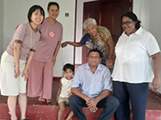
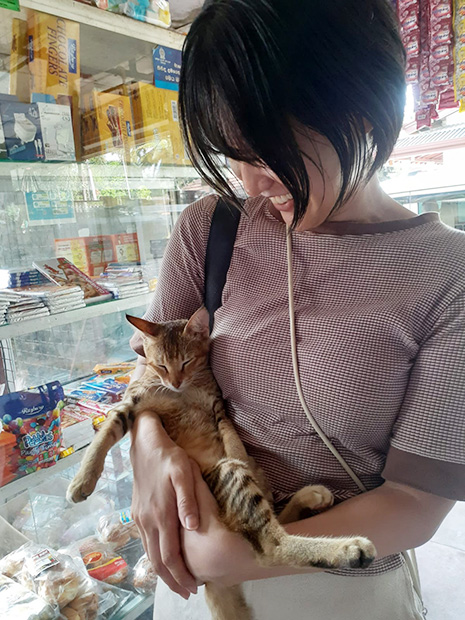
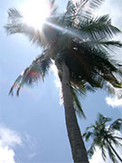

 ホストファミリー達と♪ 「料理と英語を同時に学べること、スリランカの現地の生活を体験できるので、参加を決めました。 レッスンでは、スリランカの内紛時代、スマトラ沖地震の津波においてのマーネルさんの壮絶な実体験から、カーストの話、結婚相手を新聞紙面に広告を出して募集する話、政権が変わってからの政策転換について、コロナ後は、一層若い人が海外へ出てしまうようになったことなど、スリランカ文化、スリランカ社会についてディスカッションをしました。 現地の方に聞くからこそ心に残る話です。 とくに、お父様が海軍にお勤めだったとのことで、反政府側の陣営にいつ殺されるかわからない、という思いを子供の頃に抱いていたとのこと。 当時の緊張感が伝わりました。 遺体がその辺にあった、ともおっしゃっており私が生きている時代の日本では考えられないことでした。 ホームステイ先が、なぜか日本の祖母の家に似ていて、懐かしい気分でいました。 家族の温かさ、足るを知る精神を心に刻みました。 ファミリーの親戚  かわいい子猫☆ 食べ物についてはもともとスパイス料理が好きなのですが、見た目も可愛いホッパーはテンションが上がりました！ えび、玉ねぎが和えられたふりかけ、ココナッツサンボルもおいしかったです。 また魚が好きと伝えたら、軽トラで魚を売っている人から朝購入し、滞在中二度フィッシュカレーを作ってくださいました。 朝、アボカド、バナナ、デーツ、ミルクのジュースを何度かいただき、ゴージャスで体にやさしく、うれしかったです。 デーツがアクセントになるのがよく、私も真似しようと思いました。 写真を撮ることも旅の目的の一つでしたので、料理風景を撮らせていただいたこともありがたかったです。 ホストファミリーは家族の温かさがありました。 とてもよかったです。 スリランカには以前にも来たことがありましたが、もっと好きになりました！ 日本との違いとしておもしろいのは、やはり宗教の違いでしょうか。 今回のプログラムとは違いますが、特にアヌラーダプラ等に訪れた際には仏教徒の信仰心におどろきました。 一方で海岸地域はカトリックの教会が多く、歴史からくるそれぞれの文化の違いを見ることができました。 ラトゥナプラ宝石の採掘場  南国テンション！ 日本語が書かれた車が多く走っているのもおもしろかったです。 次はアダムスピーク登山をします！ このようにすればと思ったことは、お土産をもっと工夫すれば良かったことくらいです、、！ この度は素敵なプログラムに参加させていただき、ありがとうございました。 マーネルさんとたくさんお話しできて、選んで良かったと思いました。 宝石採掘、マーネルさんのご友人による占いまで... 素敵な時間を過ごせました。 深い話をたくさんできて楽しかったです。」